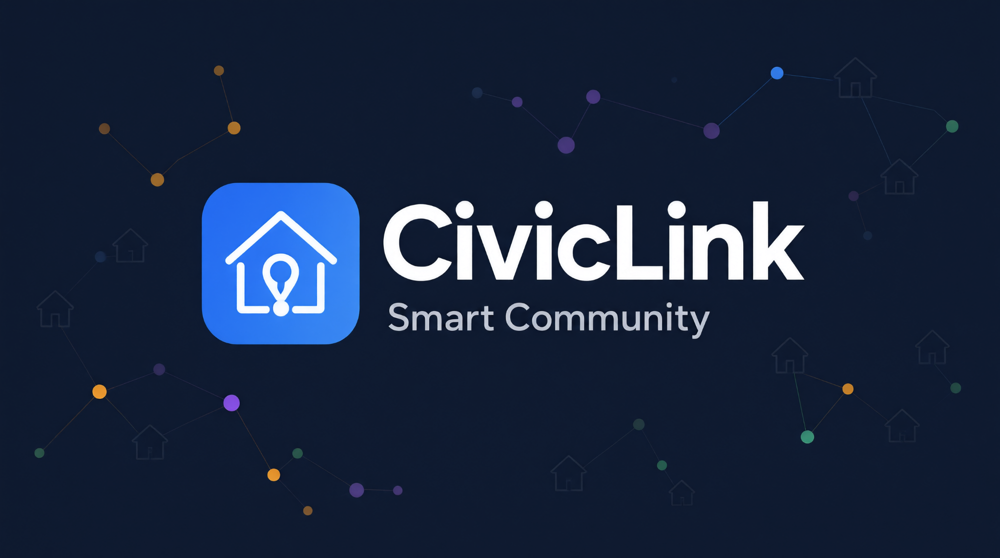

Chat frammentate
Segnalazioni e aggiornamenti si perdono tra messaggi e gruppi diversi.
INFORMAZIONI SPARSE
Le informazioni del territorio, finalmente in un unico luogo.
Nelle comunità locali, le informazioni utili spesso esistono già. Il problema è trovarle, organizzarle e mantenerle aggiornate.
Segnalazioni e aggiornamenti si perdono tra messaggi e gruppi diversi.
INFORMAZIONI SPARSEAvvisi cartacei o post isolati non offrono una visione aggiornata del territorio.
SCARSA VISIBILITÀRitrovare lo stato di una segnalazione o un oggetto smarrito richiede tempo.
TEMPI PIÙ LUNGHIIl risultato: meno coordinamento, informazioni duplicate e opportunità perse per chi vive il quartiere.
CivicLink raccoglie i dati della comunità in un flusso semplice: inserire, seguire e consultare.
Registra una criticità del territorio con categoria, zona e priorità.
INSERIMENTO ORDINATO ↗Monitora lo stato delle segnalazioni e gestisci oggetti smarriti o ritrovati.
STATO SEMPRE CHIARO ↗Consulta dati e statistiche attraverso una dashboard leggibile e filtrabile.
DATI A COLPO D'OCCHIO ↗Un flusso lineare collega l'inserimento da terminale alla consultazione nella dashboard.
Il programma da terminale guida l'operatore nelle attività principali e mantiene i dati organizzati.
╭─ CIVICLINK / GESTIONE COMUNITÀ
│ 1. Nuova segnalazione
│ 2. Elenco segnalazioni
│ 3. Oggetti smarriti / ritrovati
│ 4. Statistiche
│ 7. Esporta dati
╰─ Seleziona un'opzione: _
Categoria, zona, priorità e stato.
Registrazione e consultazione degli oggetti.
Riepiloghi e file JSON + CSV.
Validazione input e backup automatico.
Una vista sintetica per leggere l'andamento della comunità, filtrare le tabelle e importare i dati esportati.
Il file JSON viene selezionato dall'utente e letto nel browser con FileReader.
La dimostrazione segue quattro passaggi: avvio, caricamento dei dati demo, esportazione e apertura nel browser.
$ python main.py # 1. Inserisci i dati dimostrativi Scelta: 9 ✓ Dati demo caricati # 2. Esporta JSON e CSV Scelta: 7 ✓ Esportazione completata # 3. Apri e importa nella dashboard $ apri frontend/index.html File: data/exports/dashboard_data.json ✓ Dashboard aggiornata
I dati demo mostrano le principali entità gestite e la scelta di mantenere il progetto leggero.
CivicLink rispetta i vincoli tecnici previsti, senza introdurre servizi o dipendenze non necessari.
L'MVP definisce una base concreta. Queste idee rappresentano direzioni future e non funzionalità già disponibili.
Avvisi agli utenti quando una segnalazione cambia stato o viene pubblicato un aggiornamento.
Un supporto alla valutazione basato sulla frequenza delle segnalazioni in una zona.
Una vista geografica per esplorare le segnalazioni e individuare le aree più coinvolte.
Un progetto realizzato per il Python Innovation Hackathon — tema Smart Community.
Domande?